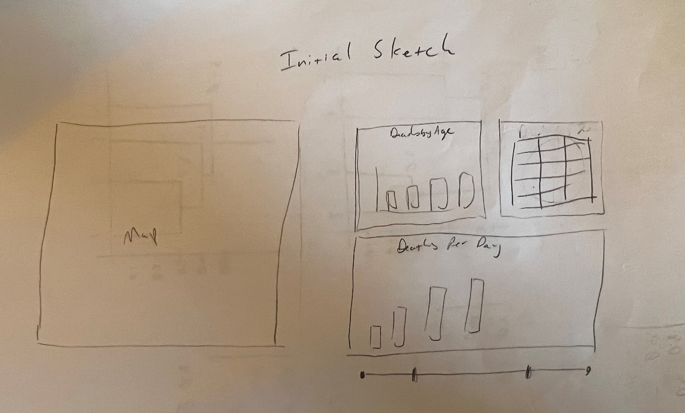
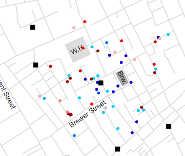

Design Process:
The first step in the design process was to evaluate the data available and the scope of the requirements. This led me to conclude the following:
The next step in the design process was to choose the appropriate visualizations for the data based on these requirements.
Since I did a good job planning it out, my initial design is very similar to my final product. I have quite a bit of experience developing dashboards using other tools like PowerBI, SAS, and Google Chart APIs, so developing a layout was straightforward. The only unknown was the capabilities of d3 (and my ability to master it). The date time selection as well as several buttons to reset, and set date ranges were added to the initial design.

Design Choices:
Overall Arrangement: I chose a simple grid layout to keep everything organized, and I wanted to keep the overall dimensions of the report to a small enough size to fit most screens. Since much of the detailed analysis happens with the map, I chose to make it the largest of the graphs. I chose the map to be the feature of the dashboard as this project relies on the map itself develop by Snow. Since the death by day timeline is featured as the interactive controller for the other visualizations, I put it on the bottom right as this is a good location for right-handed people (as well as anyone using a mouse with their right hand). It is an intuitive layout.
Map Chart: The streets, work house, and brewery were drawn in grey because I wanted to draw attention to the points that are placed on the map that represent deaths. These points are presented in color according to the age and sex of the individual. To codify male vs female, I used blue and red respectively. I chose these colors because, at least in the United States, they are colors associated with each gender. To represent age, I used a chromatic scale with lighter shades of the respective color representing younger victims, and darker shades representing older victims.
Age Group & Sex Stacked Bar: I chose a stacked bar chart because on the whole the split between male and female victims was nearly 50/50, and so losing visual cues here was less important than showing the distribution by death (although a few age buckets show statistically significant differences between male/female). Again, I tied the colors for male and female to blue and red respectively to match the map chart.
Age Group & Sex Table: I chose plain formatting for this table as I felt anything else would detract from the data being presented. I included this to add detail to the corresponding stacked bar chart.
Deaths by Day: For records not active in the remaining visualizations, they are colored grey. For those that are active, I chose purple since it's a blend of blue and red. The interactivity built into this graph is fourfold:
Discovery:
Snow’s map was excellent at tying Cholera cases to the infected water system. What highlights these findings even more is if we click into the individual days and cases. For instance, if you look at August 31st (see below), we can see as the outbreak starts to pick up steam, the cases are very tightly located around the water pump near the work house and brewery.

Another interesting view is looking at the total deaths by age and sex. From the totals, its clear that the preponderance of deaths were in the elderly and in young children. It is interesting to see the difference in death rates between sexes, however, between the ages of 11 and 60. Between 11 and 40, men seem to be more prone to succumbing to Cholera, but between 41-60, women are. The number seems to be statistically significant. There must be some underlying health or population factors that lead to this imbalance.
References:
Datasets & Requirements:
https://khreda.com/teaching/spring23/H517/project1/
Other Resources:
The D3 Graph Gallery (2018).https://d3-graph-gallery.com. Retrieved: 03/01/2023.
Bostock, Mike. Data Driven Documents (2023).https://d3js.org/. Retrieved: 03/01/2023.
Mozilla. Basic Concepts of Grid Layout (2023).https://developer.mozilla.org/en-US/docs/Web/CSS/CSS_Grid_Layout/Basic_Concepts_of_Grid_Layout. Retrieved: 03/01/2023
Google Doc to HTML Converter (2023). https://www.gdoctohtml.com/. Retrieved: 03/10/2023.